The title comes from ‘Hello, World!’, the phrase programmers traditionally make a computer display when they write their first code in a new language: if the code is right, the computer greets its coder on screen. The exhibition asked whether painting, too, could take part in conversations between humans and computers.
The exhibition text, “Hello, World!”, was written by the independent curator Moon Hyun Jeoung. It is published in Korean on the gallery’s page for the exhibition.
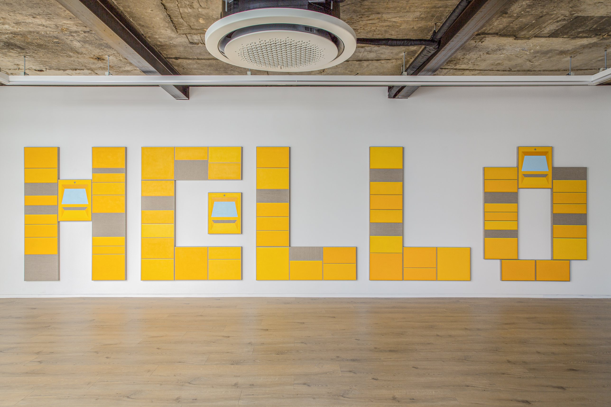
Made as a pair with , World!.
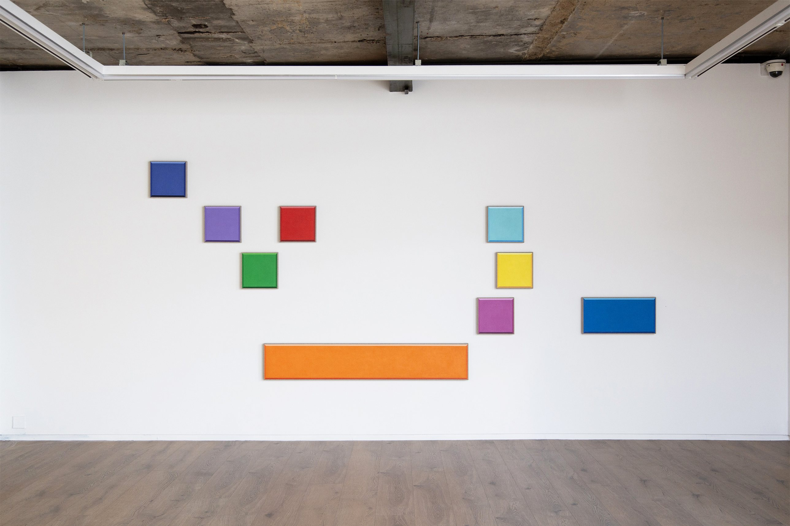
Made as a pair with Hello.
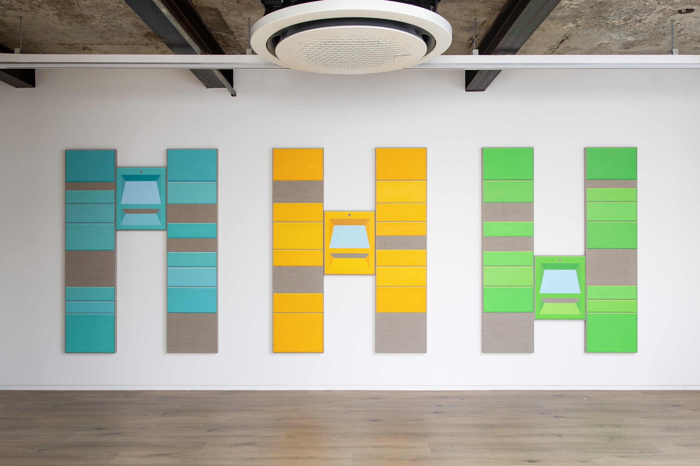
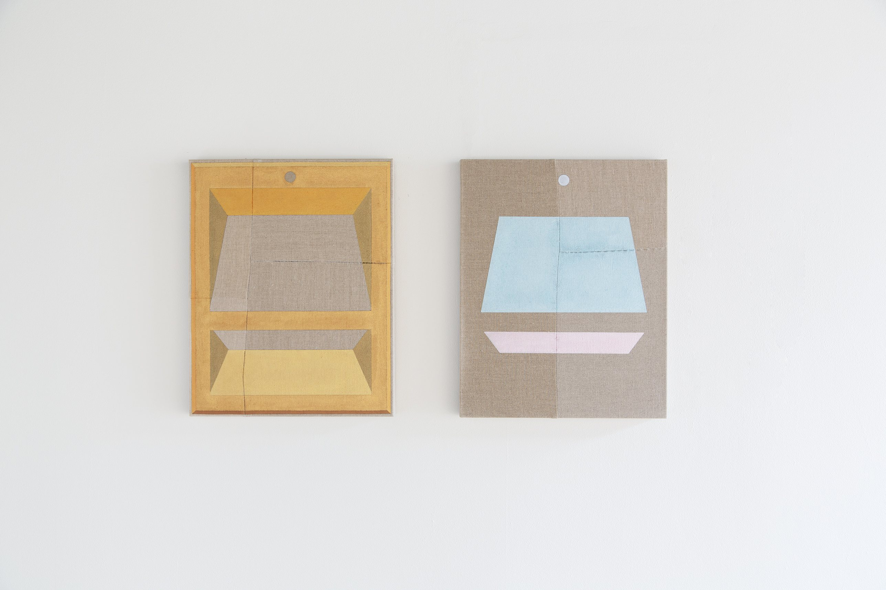
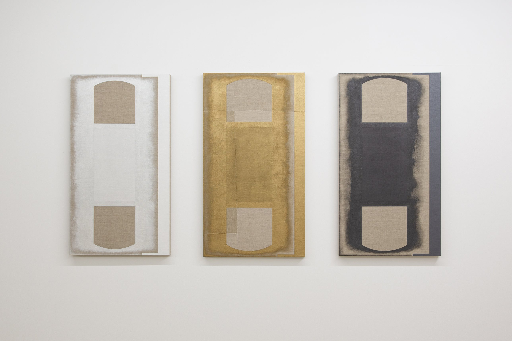
Galerie ERD is in Itaewon, often described as the most multicultural neighbourhood in Seoul. The paintings use English rather than Korean partly for that reason, and partly to answer Lawrence Weiner’s retrospective, Under the Sun, then on at the Amorepacific Museum of Art nearby.
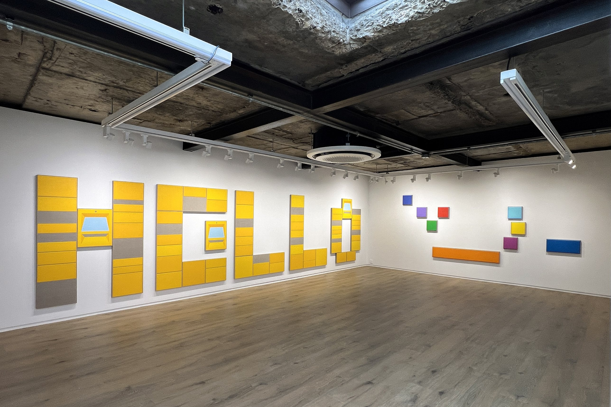
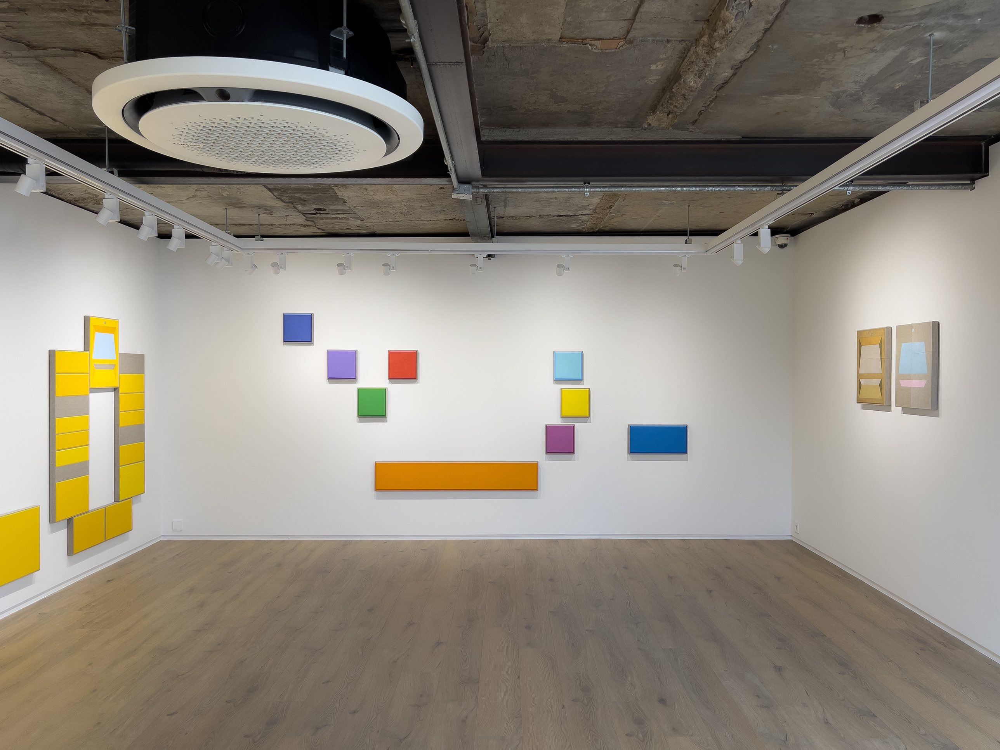
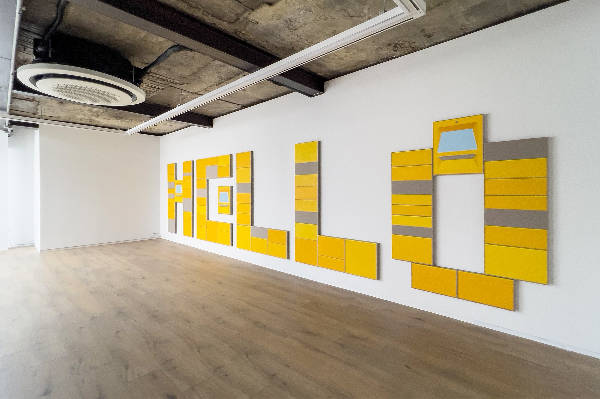
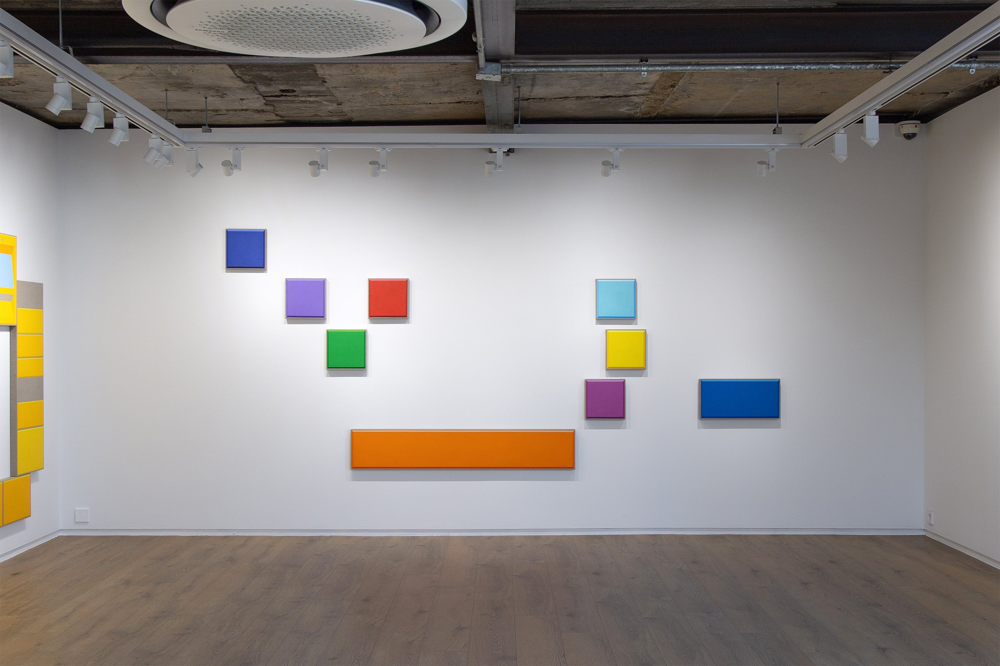
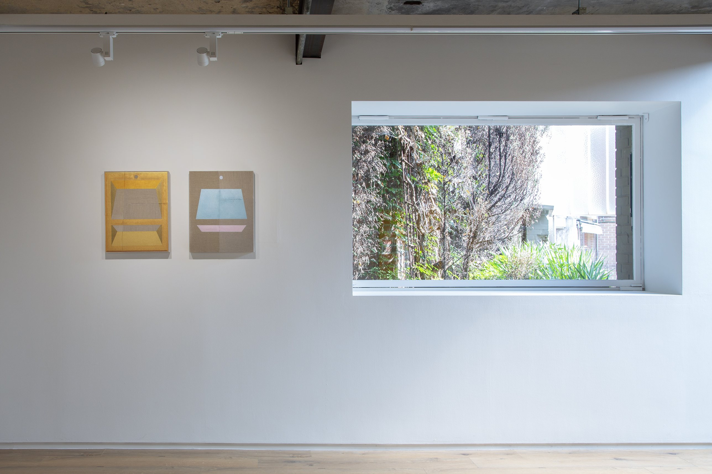
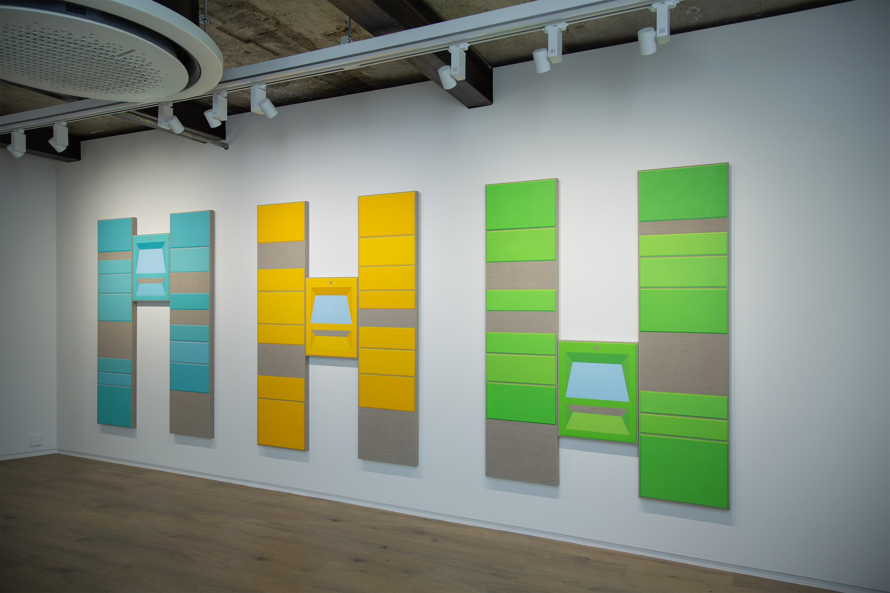
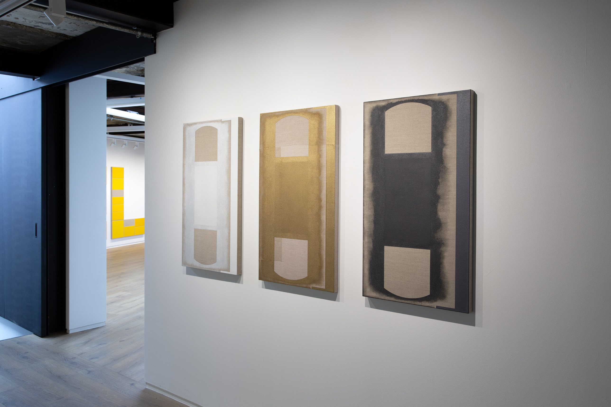
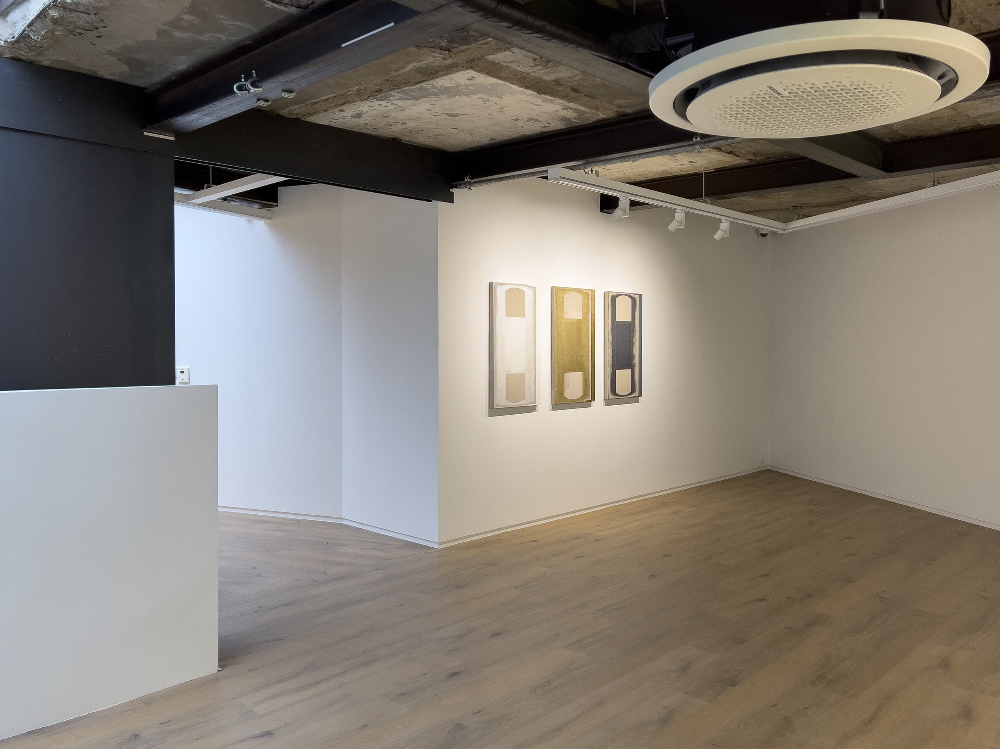